ระบบความปลอดภัย PA Portfolio
รายงานผลการพัฒนางาน PA
ครูเจมส์ นายอนันตชัย เพ็ชรรี่ | โรงเรียนบ้านคลองมดแดง
รหัสผ่านเข้ารหัสความปลอดภัยด้วยอัลกอริทึม SHA-256
ครูเจมส์ นายอนันตชัย เพ็ชรรี่ | โรงเรียนบ้านคลองมดแดง
ครู อันดับ คศ.๑ (เลขที่ตำแหน่ง ๔๕๙๕)
ค.บ. คอมพิวเตอร์ มรภ.อุตรดิตถ์
การจัดการเรียนรู้เชิงรุก (Active Learning) ผสานนวัตกรรมเกมมิฟิเคชัน (Gamification) เพื่อยกระดับทักษะดิจิทัลและการคิดเชิงคำนวณของผู้เรียน โรงเรียนบ้านคลองมดแดง สำนักงานเขตพื้นที่การศึกษาประถมศึกษากำแพงเพชร เขต ๒

ประมวลร่องรอยกิจกรรมเชิงประจักษ์ตลอดรอบการประเมิน ๑ ตุลาคม ๒๕๖๘ – ๓๐ กันยายน ๒๕๖๙ โรงเรียนบ้านคลองมดแดง
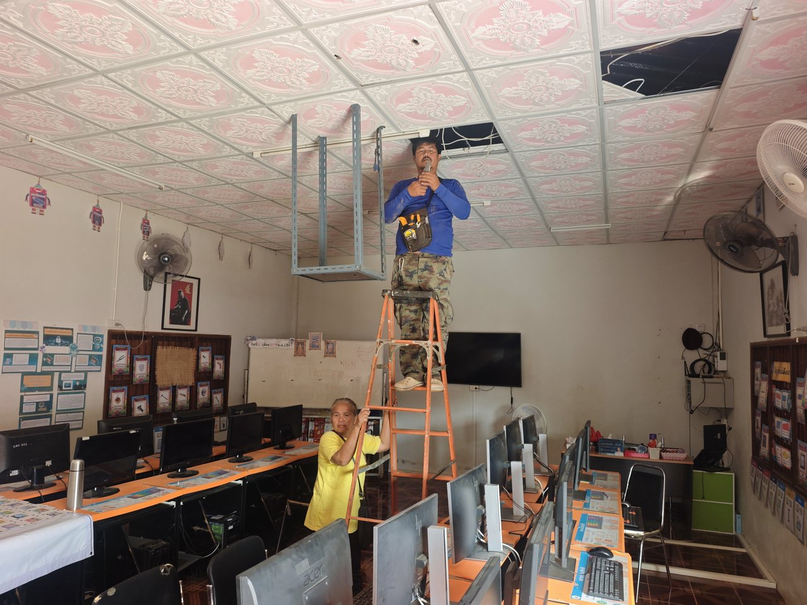


ประมวลผลงานรางวัลชนะเลิศระดับเหรียญทอง เกียรติบัตรดีเด่น และผลสัมฤทธิ์จากการจัดการเรียนรู้เชิงรุก นวัตกรรมดิจิทัล และการพัฒนาตนเองอย่างต่อเนื่อง รอบปีงบประมาณ ๒๕๖๙
การจัดตารางสอนจริง ๒๕ คาบต่อสัปดาห์ (ภาคเรียนที่ ๑/๒๕๖๙) และภาระงานฝ่ายบริหารทั่วไป งานสารสนเทศ ICT งานประชาสัมพันธ์ และงานตอบสนองนโยบาย รวม ๓๕ ชั่วโมง/สัปดาห์
ครูเจมส์ อนันตชัย เพ็ชรรี่ ปฏิบัติหน้าที่หัวหน้างานเทคโนโลยีสารสนเทศ (ICT) และผู้รับผิดชอบการบริหารจัดการสื่อดิจิทัลเพื่อการสื่อสารและประชาสัมพันธ์ของโรงเรียนบ้านคลองมดแดงอย่างเป็นทางการ ครอบคลุม ๕ แพลตฟอร์มหลัก เพื่อเผยแพร่ภาพลักษณ์ กิจกรรมการเรียนรู้ และประสานความร่วมมือกับผู้ปกครองและชุมชน
รายงานผลการปฏิบัติงานตามข้อตกลงในการพัฒนางาน (PA) สำหรับข้าราชการครู ตำแหน่งครู (ยังไม่มีวิทยฐานะ) โรงเรียนบ้านคลองมดแดง สพป.กำแพงเพชร เขต ๒ ครบถ้วนตามแบบข้อตกลงในการพัฒนางาน ๑๕ ตัวชี้วัด ครบทั้ง ๓ ด้าน

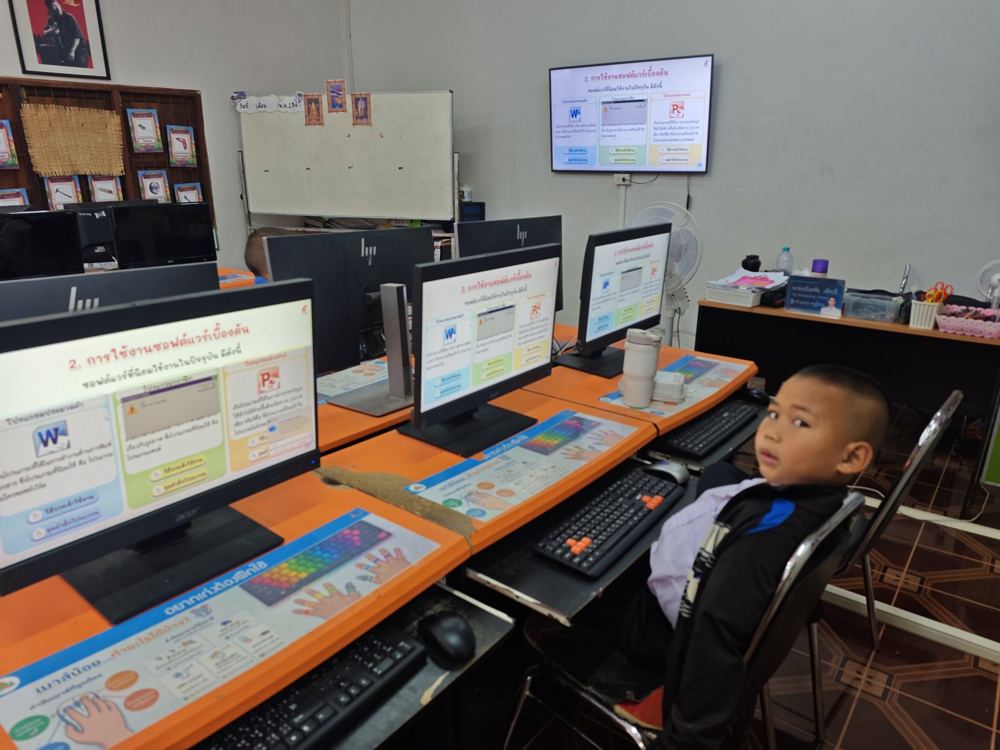
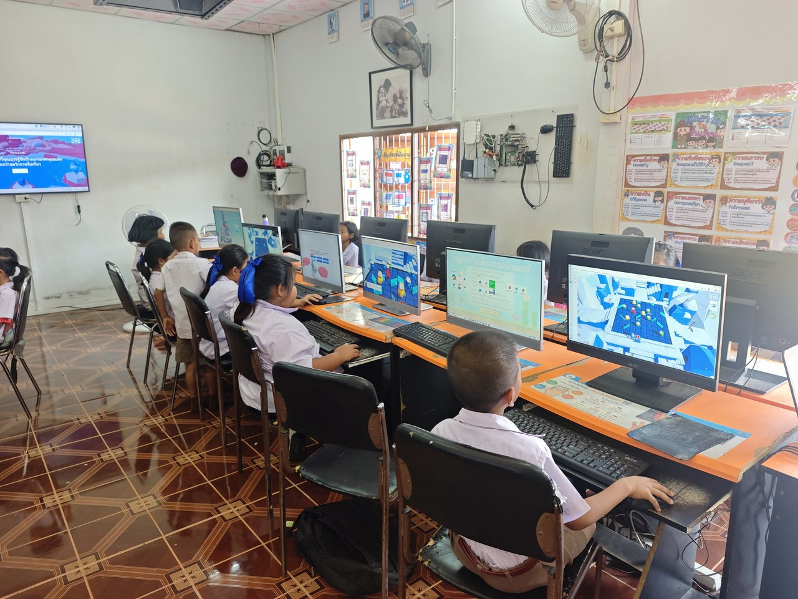
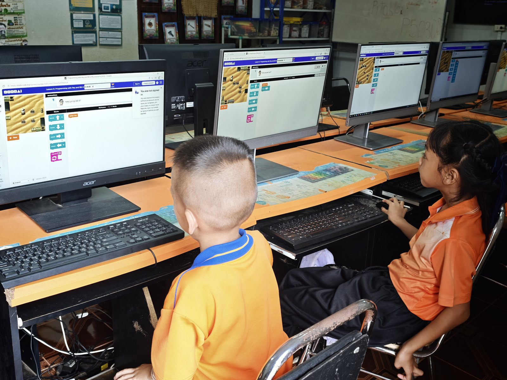
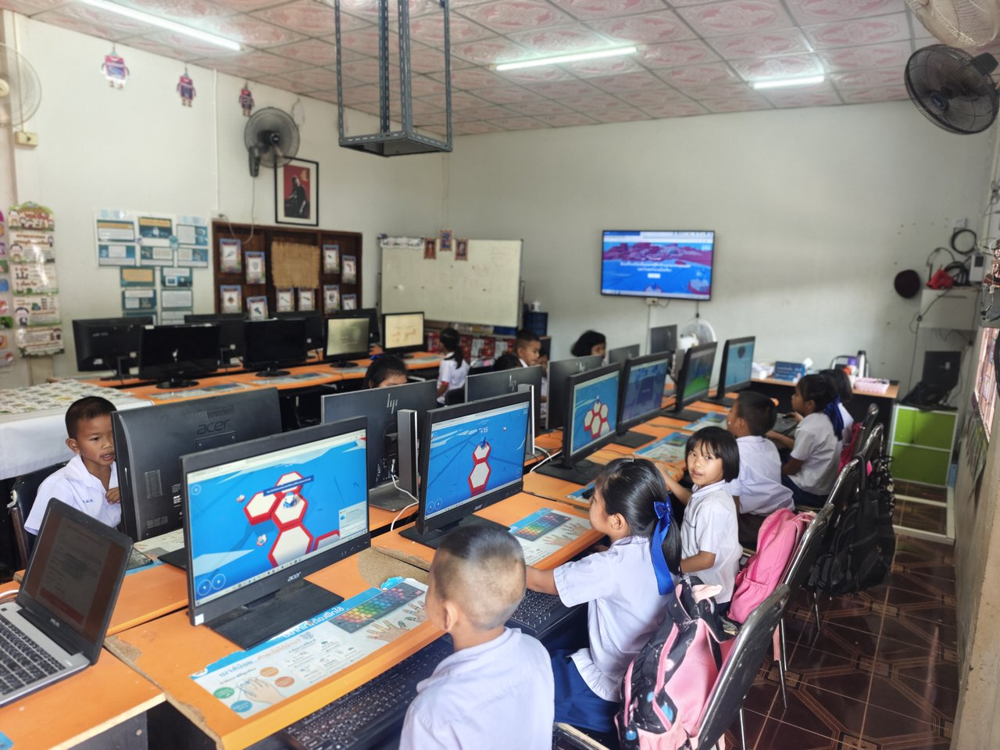
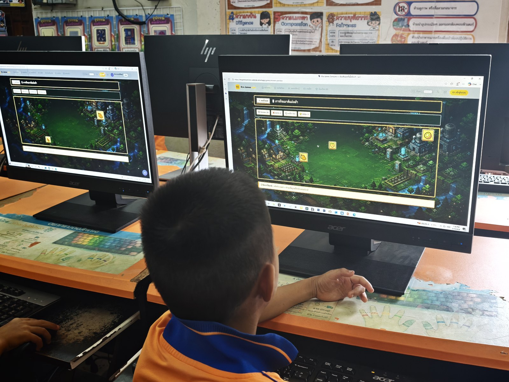
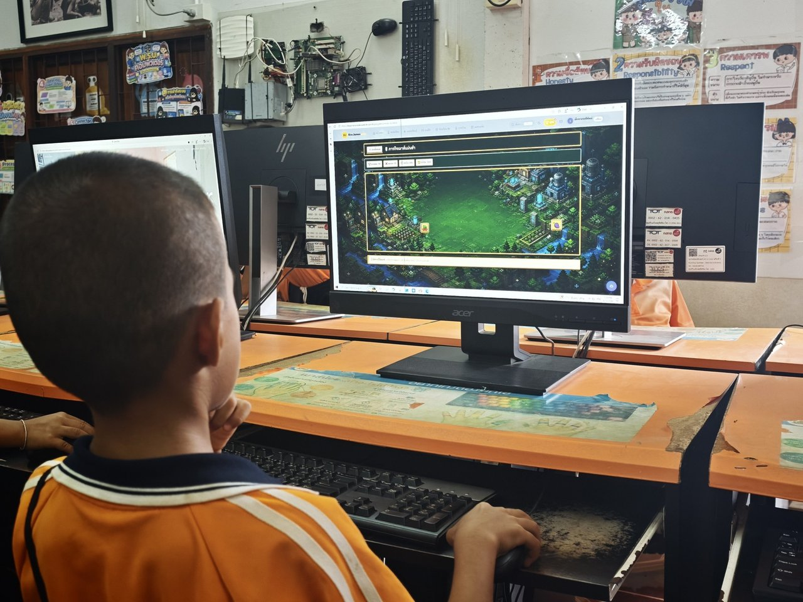
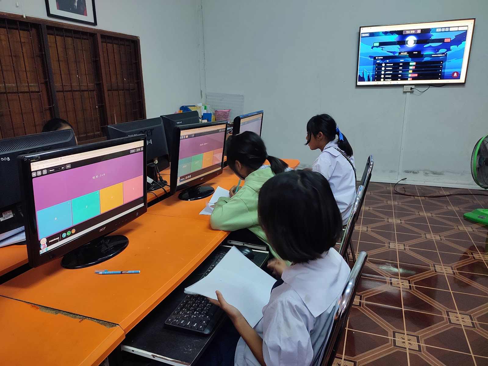
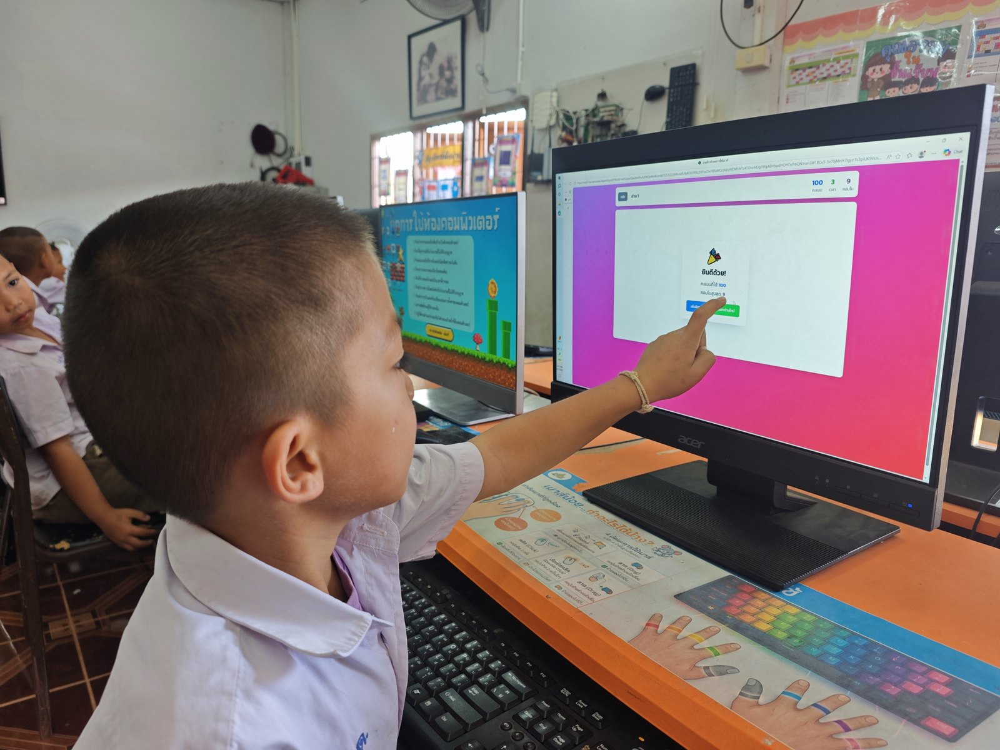


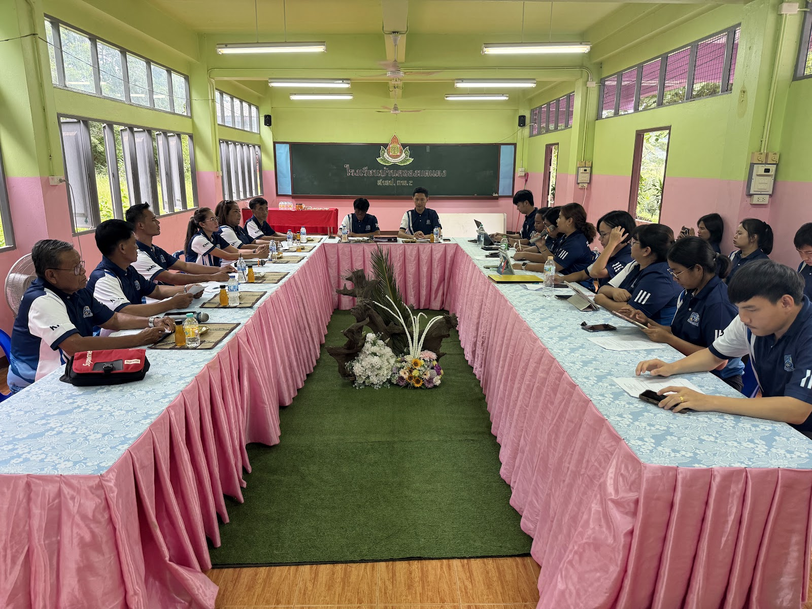


การพัฒนาทักษะปฏิบัติการใช้เมาส์ด้วยเกมมิฟิเคชัน (Gamification) ร่วมกับ Active Learning วิชาวิทยาการคำนวณและเทคโนโลยี ชั้นประถมศึกษาปีที่ ๑ (๑๑ คน)
แก้ปัญหาพัฒนาการกล้ามเนื้อมัดเล็ก (Fine Motor Skills) และการประสานสัมพันธ์สายตากับมือ (Hand-Eye Coordination) ของเด็กวัย 6-7 ขวบในโรงเรียนชนบทที่ไม่มีคอมพิวเตอร์ที่บ้าน โดยเปลี่ยนการฝึกใช้เมาส์ที่น่าเบื่อให้เป็นภารกิจสะสมแต้ม พิชิตด่าน และรับเหรียญตราเกียรติยศ ด้วยกระบวนการ ADDIE Model 5 ขั้นตอน
วิเคราะห์ ว 4.2 ป.1/4 และ ป.1/5, สำรวจความพร้อมกล้ามเนื้อมือและสายตาผู้เรียน ป.1 จำนวน 11 คน
ออกแบบแผนการจัดการเรียนรู้ 4 แผน (แผน 5 ถึง 8) วางภารกิจจากง่ายไปยาก พร้อมเกณฑ์รูบริก 3 ระดับ
พัฒนาสื่อเกมฝึกเมาส์ บัตรคำสั่ง ใบงานเตรียมมือ และแบบทดสอบความรู้ 10 ข้อพร้อมเฉลย
จัดกิจกรรมในห้องคอมฯ ครูสาธิตแบบมีผู้ชี้แนะ ฝึกปฏิบัติรายบุคคล และเพื่อนช่วยเพื่อน (Peer Tutoring)
ประเมินทักษะปฏิบัติ 4 ด้าน (รูบริก 3 ระดับ) รายบุคคล 11 คน สังเกตพฤติกรรม และสะท้อนผลสู่ PLC
สาธิตท่าจับเมาส์ที่ถูกต้อง ฝึกวางมือผ่อนคลาย เลื่อนตัวชี้ตามเส้นทางและเข้าหาเป้าหมายบนจอ
ฝึกจังหวะการกดคลิกซ้ายเลือกวัตถุ และการดับเบิลคลิกเปิดรายการในภารกิจเกมการศึกษา
ฝึกกดปุ่มค้าง ลากไอเทมไปยังเป้าหมาย แล้วปล่อย พัฒนาการประสานสัมพันธ์สายตากับมือ
ฝึกใช้ล้อเลื่อนหน้าจอ (Scroll) ทำภารกิจรวม ๔ ทักษะต่อเนื่อง ทดสอบความคล่องแคล่วและสะท้อนผล

ผู้เรียนชั้นประถมศึกษาปีที่ ๑ (๑๑ คน) ฝึกปฏิบัติทักษะการจับเมาส์ การเคลื่อนตัวชี้ การคลิก ดับเบิลคลิก ลากวาง และเลื่อนหน้าตามภารกิจเกมการศึกษาบนระบบ Kru James Soncom ในห้องปฏิบัติการคอมพิวเตอร์โรงเรียนบ้านคลองมดแดง โดยครูผู้สอนทำหน้าที่เป็นโค้ช (Facilitator) สาธิตทีละขั้นและให้คำแนะนำเฉพาะบุคคล
รายงานผลการประเมินตามเกณฑ์รูบริกส์ ๓ ระดับ (ระดับ ๓ ดี : ทำได้ด้วยตนเอง | ระดับ ๒ ปานกลาง : ทำได้เมื่อชี้แนะ | ระดับ ๑ พอใช้)
ผลการทดสอบภาคปฏิบัติจริงของนักเรียนชั้นประถมศึกษาปีที่ ๑ โรงเรียนบ้านคลองมดแดง จำนวน ๑๑ คน (ครบ ๑๐๐%) ใน ๔ ทักษะหลัก (การเคลื่อนตัวชี้, คลิกและดับเบิลคลิก, ลากและวาง Drag & Drop, เลื่อนหน้าจอ Scroll) ผู้เรียนทุกคนผ่านเกณฑ์การประเมินตามรูบริกส์ ๔ ด้าน ๓ ระดับ โดยสามารถปฏิบัติได้ด้วยตนเองอย่างถูกต้องคล่องแคล่ว (คิดเป็นร้อยละ ๑๐๐)
| เลขที่ | รหัสผู้เรียน (PDPA) | ๑. เคลื่อนตัวชี้ | ๒. คลิก & ดับเบิลคลิก | ๓. ลากและวาง | ๔. เลื่อนหน้าจอ | ผลการฝึกปฏิบัติ | สถานะพัฒนาการ |
|---|---|---|---|---|---|---|---|
| ๑ | นักเรียน ป.๑ เลขที่ ๑ | ปฏิบัติได้ดี | ปฏิบัติได้ดี | ปฏิบัติได้ดี | ปฏิบัติได้ดี | ผ่านเกณฑ์ดี | ผ่านเกณฑ์ (ทำได้เอง) |
| ๒ | นักเรียน ป.๑ เลขที่ ๒ | ปฏิบัติได้ดี | ปฏิบัติได้ดี | ปฏิบัติได้ดี | ปฏิบัติได้ดี | ผ่านเกณฑ์ดี | ผ่านเกณฑ์ (ทำได้เอง) |
| ๓ | นักเรียน ป.๑ เลขที่ ๓ | ปฏิบัติได้ดี | ปฏิบัติได้ดี | ปฏิบัติได้ดี | ปฏิบัติได้ดี | ผ่านเกณฑ์ดี | ผ่านเกณฑ์ (ทำได้เอง) |
| ๔ | นักเรียน ป.๑ เลขที่ ๔ | ปฏิบัติได้ดี | ปฏิบัติได้ดี | ปฏิบัติได้ดี | ปฏิบัติได้ดี | ผ่านเกณฑ์ดี | ผ่านเกณฑ์ (ทำได้เอง) |
| ๕ | นักเรียน ป.๑ เลขที่ ๕ | ปฏิบัติได้ดี | ปฏิบัติได้ดี | ปฏิบัติได้ดี | ปฏิบัติได้ดี | ผ่านเกณฑ์ดี | ผ่านเกณฑ์ (ทำได้เอง) |
| ๖ | นักเรียน ป.๑ เลขที่ ๖ | ปฏิบัติได้ดี | ปฏิบัติได้ดี | ปฏิบัติได้ดี | ปฏิบัติได้ดี | ผ่านเกณฑ์ดี | ผ่านเกณฑ์ (ทำได้เอง) |
| ๗ | นักเรียน ป.๑ เลขที่ ๗ | ปฏิบัติได้ดี | ปฏิบัติได้ดี | ปฏิบัติได้ดี | ปฏิบัติได้ดี | ผ่านเกณฑ์ดี | ผ่านเกณฑ์ (ทำได้เอง) |
| ๘ | นักเรียน ป.๑ เลขที่ ๘ | ปฏิบัติได้ดี | ปฏิบัติได้ดี | ปฏิบัติได้ดี | ปฏิบัติได้ดี | ผ่านเกณฑ์ดี | ผ่านเกณฑ์ (ทำได้เอง) |
| ๙ | นักเรียน ป.๑ เลขที่ ๙ | ปฏิบัติได้ดี | ปฏิบัติได้ดี | ปฏิบัติได้ดี | ปฏิบัติได้ดี | ผ่านเกณฑ์ดี | ผ่านเกณฑ์ (ทำได้เอง) |
| ๑๐ | นักเรียน ป.๑ เลขที่ ๑๐ | ปฏิบัติได้ดี | ปฏิบัติได้ดี | ปฏิบัติได้ดี | ปฏิบัติได้ดี | ผ่านเกณฑ์ดี | ผ่านเกณฑ์ (ทำได้เอง) |
| ๑๑ | นักเรียน ป.๑ เลขที่ ๑๑ | ปฏิบัติได้ดี | ปฏิบัติได้ดี | ปฏิบัติได้ดี | ปฏิบัติได้ดี | ผ่านเกณฑ์ดี | ผ่านเกณฑ์ (ทำได้เอง) |
| สรุปผลการประเมินภาพรวม : | ผู้เรียนผ่านการประเมินทักษะปฏิบัติครบทั้ง ๑๑ คน (๑๐๐%) | มีพัฒนาการดีขึ้น (๑๐๐%) | |||||
โครงสร้างรายวิชา ว ๔.๒ ป.๑–ม.๓, คำอธิบายรายวิชา และแผนจัดเวลาเรียน ๒๕ คาบ/สัปดาห์ (ตัวชี้วัด ๑.๑)
แผน Active Learning ๔ แผนประเด็นท้าทาย ป.๑ (แผน ๕–๘ รวม ๒๐๐ นาที) พร้อมสื่อสไลด์และใบงาน (ตัวชี้วัด ๑.๒, ๑.๔)
บันทึกผลการสอน K-P-A รายชั่วโมง, สถิติเช็คชื่อ Real-time, ปัญหา/อุปสรรค และแนวทางแก้ไข (ตัวชี้วัด ๑.๓, ๑.๗)
ระบบ GradeBook K/P/A, ผลประเมินทักษะเมาส์ ๔ ด้าน, และส่งออก ปพ.๕ ดิจิทัล PDF/Excel/CSV (ตัวชี้วัด ๑.๕, ๒.๑)
รายงานผลการปฏิบัติงานตามคำสั่งที่ได้รับมอบหมาย การรับผิดชอบกิจกรรมโครงการ และการมีส่วนร่วมพัฒนาการศึกษาของโรงเรียนบ้านคลองมดแดง ครอบคลุม ๑๐ รายการภาระงานและหน้าที่รับผิดชอบ
รายงานการปฏิบัติตนในการรักษาวินัย คุณธรรม จริยธรรม และจรรยาบรรณวิชาชีพทางการศึกษา เพื่อเป็นแบบอย่างที่ดีแก่ผู้เรียนและสถานศึกษา ครอบคลุม ๑๐ รายการปฏิบัติตน


ประมวลภาพถ่ายจริงจากคลัง Google Photos แยกตามรายข้อและองค์ประกอบการประเมิน PA ๒๕๖๙ อย่างเป็นระบบ คลิกเพื่อเปิดดูอัลบั้มภาพเต็ม
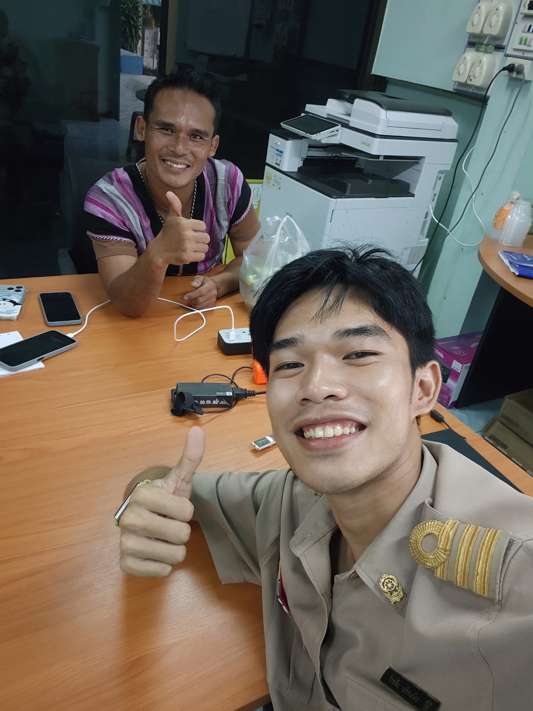

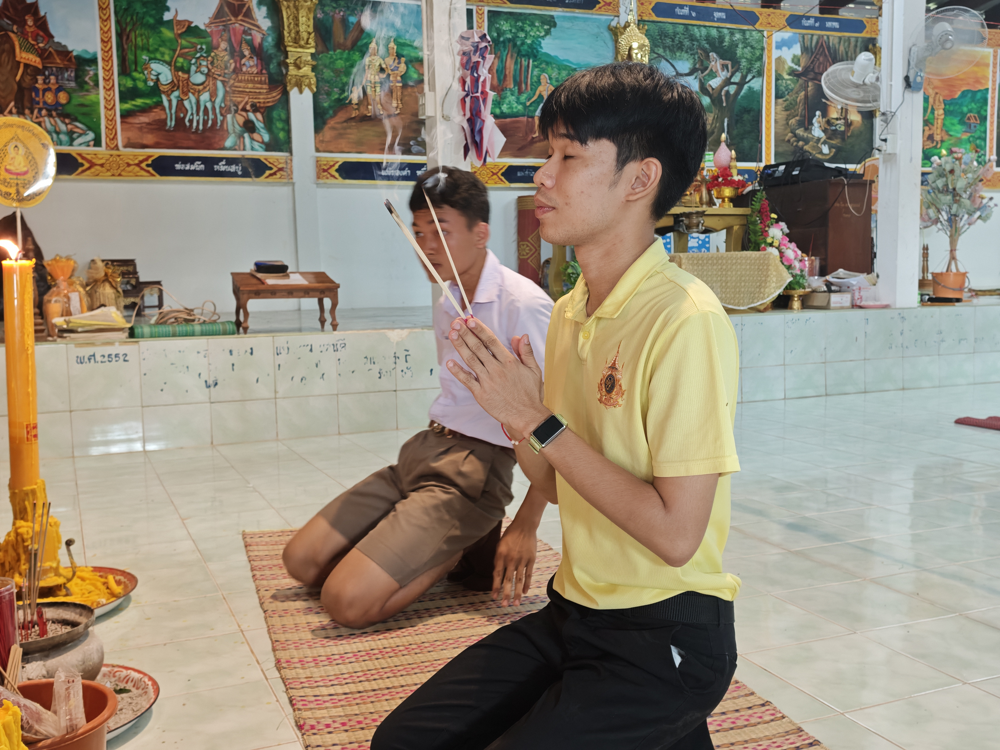

นำเสนอผลงานฉบับย่อสไตล์ Canva ครบถ้วนทั้ง ๓๔ สไลด์ พร้อมบทบรรยายสำหรับซ้อมและฉายต่อหน้าคณะกรรมการ


ขอขอบพระคุณคณะกรรมการประเมินทุกท่านที่ให้คำแนะนำและข้อเสนอแนะเชิงวิชาชีพ จัดเก็บลงฐานข้อมูล Google Firebase แบบ Real-time
ผู้อำนวยการโรงเรียนบ้านคลองมดแดง
ประธานคณะกรรมการประเมินผลการพัฒนางาน (PA)
ครู โรงเรียนบ้านคลองมดแดงสาขาบ้านใหม่ชุมนุมไทร
คณะกรรมการประเมินผลการพัฒนางานตามข้อตกลง (PA)
ครู โรงเรียนบ้านคลองมดแดงสาขาบ้านใหม่ชุมนุมไทร
คณะกรรมการประเมินผลการพัฒนางานตามข้อตกลง (PA)
ระบบถูกออกแบบในรูปแบบ Hybrid Ready คือ สามารถทำงานได้ทันทีทั้งแบบ Local Mode (ไม่ต้องต่อเน็ต) และพร้อมเชื่อมต่อกับ Google Cloud Firestore จริง เมื่อใส่ค่าคีย์
firebaseConfig มาวางในไฟล์ firebase-config.jsgit push ระบบจะเชื่อมต่อฐานข้อมูลจริงทันที!ไฟล์เอกสารรายงานฉบับสมบูรณ์ เอกสารสไลด์ และคำสั่งทางการสำหรับคณะกรรมการประเมิน